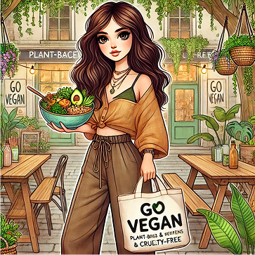
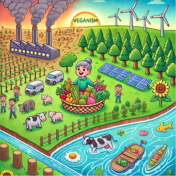

Mitä tarkoittaa olla vegaani?

Vegaani on henkilö, joka ei syö mitään eläinkunnasta peräisin olevia tuotteita kuten lihaa, kalaa, munia, maitotuotteita ja niiden johdannaisia. Vegaani ei myöskään osta eläinperäisiä vaatteita, kuten nahkaa ja villaa, eikä tue palveluita, jotka perustuvat eläinten riistoon.
Vegaaneja voi halutessaan luokitella monilla tavoin, mutta harva vegaanikaan mahtuu minkään tietyn kategorian alle. Vegaanit eivät ole yhtenäistä massaa, jolla olisi yhtenevä maailmankuva, vaan he ovat mitä erilaisimpia yksilöitä, jotka kaikki ovat kuitenkin syystä tai toisesta ryhtyneet vegaaneiksi.
Eläinten hyväksikäyttöön liittyvät eettiset ongelmat ovat todennäköisesti suurin yksittäinen syy veganismin omaksumiseen. Ekologiset syyt ovat joillakin puolestaan se tärkein seikka. Vegaaniksi aletaan myös terveyssyistä sekä uskonnollisista tai henkisistä syistä.
Veganismi liittyy myös ihmisoikeuksiin. Eläinten rehuksi menee 40 % maailman viljasadosta, mutta tämä vilja kelpaisi myös ihmisten ravinnoksi. Lihaa ja muita eläinperäisiä tuotteita syövä ihminen vaatii moninkertaisen maa-alan ruoantuotannolleen, koska ravintoa menee "hukkaan", kun se kierrätetään eläinten kautta.
Lähde: Vegaaniliitto →
Veganismi ja ympäristö

Ilmastonmuutos, metsien hävitys ja vesivarojen ehtyminen ovat suuria ympäristöhaasteita, joihin ruokavalintamme vaikuttavat enemmän kuin usein ajattelemme. Veganismi ei ole pelkästään eettinen valinta eläinten puolesta — se on myös merkittävä teko ympäristön hyväksi.
- Kasvipohjainen ruokavalio vähentää hiilijalanjälkeä. Eläinperäisen ruoan tuotanto tuottaa huomattavasti enemmän kasvihuonekaasupäästöjä kuin kasvipohjainen ruokavalio. Esimerkiksi naudanliha vaatii suuret määrät rehua, vettä ja maapinta-alaa, ja sen tuotanto tuottaa jopa 10 kertaa enemmän hiilidioksidipäästöjä kuin palkokasvit.
- Vähemmän metsien hävitystä. Eläintuotanto on yksi suurimmista syistä sademetsien hakkuisiin. Suuria maa-alueita raivataan karjankasvatusta ja eläinten rehun, kuten soijan, viljelyä varten. Ironista kyllä, suurin osa maailman soijasta ei päädy ihmisten lautaselle, vaan eläinten rehuksi.
- Vedenkulutuksen vähentäminen. Eläinperäinen ruoka kuluttaa huomattavasti enemmän vettä kuin kasvipohjainen. Esimerkiksi yhden kilon naudanlihan tuottamiseen kuluu keskimäärin 15 000 litraa vettä, kun taas vehnän tuotantoon tarvitaan vain noin 1 500 litraa kiloa kohden. Kasvipohjainen ruokavalio on siis merkittävä keino säästää arvokasta vettä.
Pieni muutos, suuri vaikutus. Vaikka kaikki eivät halua tai voi siirtyä täysin vegaaniseen ruokavalioon, jo pienetkin muutokset, kuten kasvisruoan lisääminen arkeen, voivat auttaa vähentämään ympäristökuormitusta. Jokainen kasvisateria on askel kohti kestävämpää tulevaisuutta.